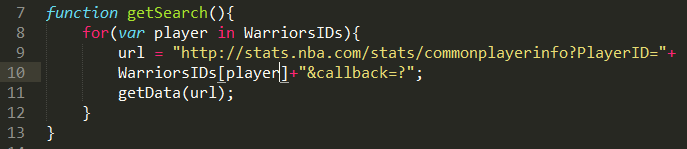
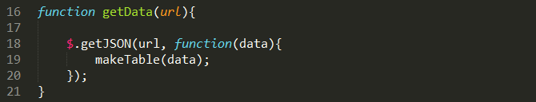
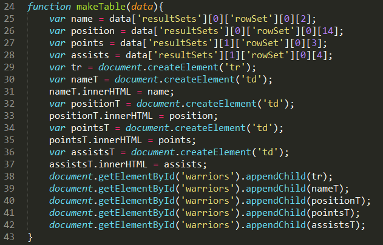
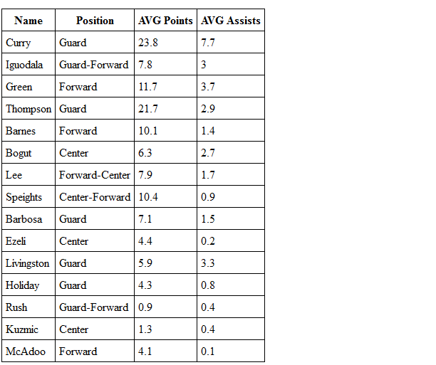

Connect with and use the NBA Stats API
In this section, I will demonstrate how to create a table that shows average points and average assists of all of the players on a team. To do this, I will use the common player info URL. I have broken down the process into these three steps:
I have broken up the following steps into separate functions to better highlight what happens in each step of the process. These steps could be combined into fewer functions if you choose. The first step is to create the URL, including the correct parameters. This URL will then be passed on to get the data from the NBA server and then put into a table. This step (and by definition, all further steps) will be called for each player in my object holding player IDs.
Next, make a request to the URL and immediately call a function that is able to read the data returned from the URL. If you are receiving a CORS error at this step, please refer to the previous page for a potential solution and more information on this error. The data is then sent, in object form, to be made into a table.
Here is where understanding the returns from your request comes in handy. If we are familiar with what will be returned when requesting common player info, we then know that in the first resultSet within the first element of its rowSet in the third element of the array is the player's last name. The fifteenth element is the player's position. Similarly, the second element of resultSet within the first element of its rowSet in the fourth and fifth element are average points and average assists for that player. Here I have separated out these pieces of data into their own variables to make a better distinction to readers of what equals what. This is not required and could be directly written into the innerHTML section.
Once the variables for the table have been assigned, you can create your table as you see fit. Here I have made a row for each player. Since this is an iterative process inside step 2, I only need to create a single row with its columns filled in for the current player.
And there you have it!
